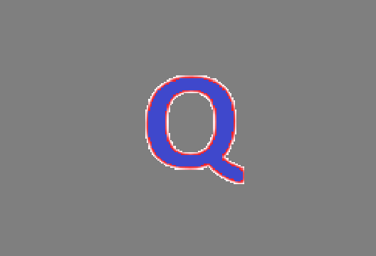

🎯 Generador de Marcador AR
Sigue estos pasos para crear tu marcador de realidad aumentada
Tu Logo Actual

Este es el logo que se usará como marcador AR
2Subir tu Logo
En la página del generador:
- Haz clic en "Choose File" o "Seleccionar archivo"
- Navega hasta la carpeta
img/ de este proyecto
- Selecciona el archivo logo.png
- La imagen se cargará automáticamente
3Descargar el Archivo .patt
Una vez cargada la imagen:
- Verás una vista previa del patrón generado
- Haz clic en el botón "Download Marker" o "Descargar Marcador"
- Se descargará un archivo con extensión .patt
4Guardar el Archivo
Guarda el archivo descargado en la ubicación correcta:
augmented-reality/markers/pattern-logo.patt
Importante: El archivo debe llamarse exactamente pattern-logo.patt
y estar dentro de la carpeta markers/
⚠️ Nota Importante:
Si el archivo descargado tiene un nombre diferente (como "pattern-marker.patt"),
asegúrate de renombrarlo a pattern-logo.patt
💡 Consejos para un Mejor Marcador
- Alto contraste: Logos con buen contraste entre colores oscuros y claros funcionan
mejor
- Detalles únicos: Imágenes con patrones distintivos son más fáciles de detectar
- Evita fondos blancos: Añade un borde o fondo de color para mejorar la detección
- Tamaño mínimo: El logo impreso debe tener al menos 10x10 cm para una buena
detección
5Iniciar el Servidor
Una vez que tengas el archivo .patt guardado, inicia un servidor local:
# Opción 1: Python 3
python -m http.server 8000
# Opción 2: Node.js
npx http-server -p 8000
6Probar la Aplicación
Abre tu navegador y ve a:
http://localhost:8000/index-youtube.html
Permite el acceso a la cámara y apunta al logo. ¡El video de YouTube debería aparecer!
✅ ¡Listo!
Una vez completados estos pasos, tu aplicación de realidad aumentada estará funcionando.
Apunta la cámara al logo y disfruta de la experiencia AR.
¿Necesitas ayuda? Consulta el archivo README.md para más información